Lectures in this section
These services sit beside DynamoDB and Redshift in Domain 2. The exam rarely asks deep internals — it asks which database fits a scenario.
- Amazon RDS — engines, security, ACID and operations ~12:00 Slides 375–383
- Amazon Aurora — performance, Serverless and pricing ~6:00 Slides 385–388
- Amazon DocumentDB — MongoDB-compatible documents ~4:00 Slides 390–392
- Amazon Neptune — graph database ~5:00 Slides 394–396
- Amazon Keyspaces — Cassandra-compatible ~3:00 Slides 398–399
- Amazon MemoryDB for Redis ~5:00 Slides 401–403
- Amazon Timestream — time-series analytics ~6:00 Slides 405–408
- Purpose-built database selection ~5:00
Amazon RDS
Amazon Relational Database Service (RDS) is a fully managed relational database. You choose an engine; AWS handles provisioning, patching, backups and Multi-AZ failover. For data engineering it is the operational store behind pipelines — metadata catalogs, staging schemas, and transactional sources for DMS and Glue CDC jobs.
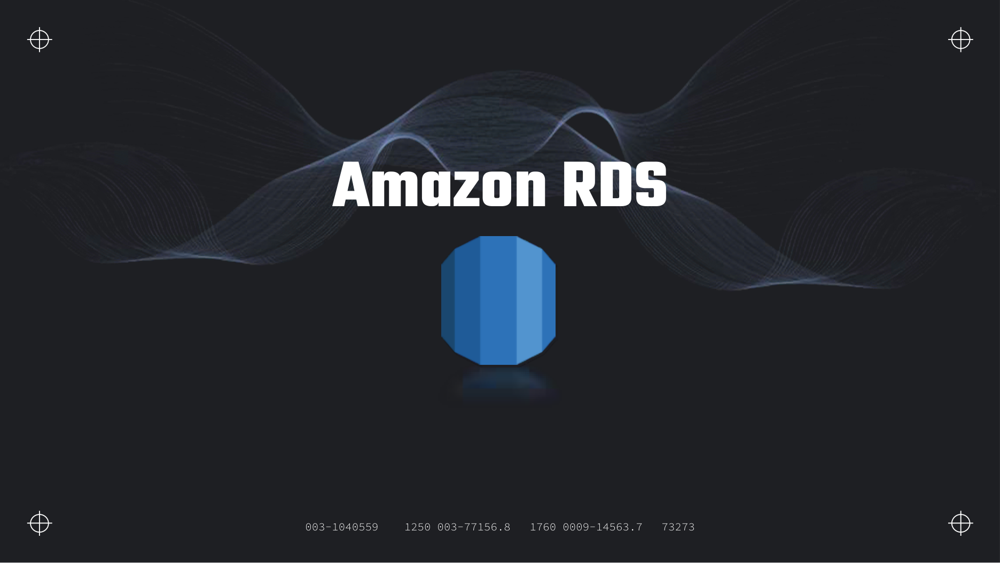
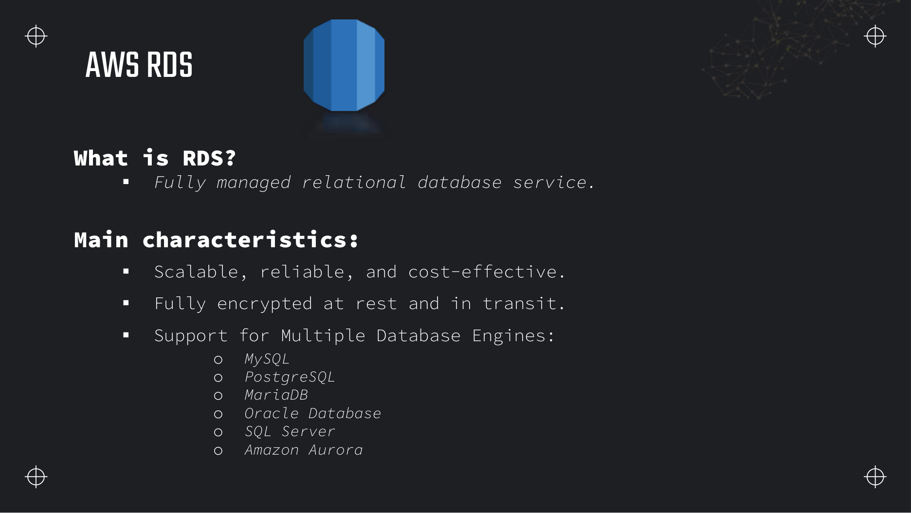
Supported engines
| Engine | Typical exam scenario | Notable limit |
|---|---|---|
| MySQL / MariaDB | Open-source OLTP, web apps, read replicas for reporting | MySQL table size limit 16 TiB — partition large tables |
| PostgreSQL | JSON columns, geospatial, complex SQL, Glue zero-ETL targets | Tune autovacuum; use COPY for bulk loads |
| Oracle / SQL Server | Lift-and-shift from on-premises commercial DB | Licensing costs; SQL Server failover needs enough provisioned IOPS |
| Aurora | MySQL/PostgreSQL compatible with higher throughput and storage auto-scale | See Aurora section — different failover and replica model |
Security — KMS, backups and patching
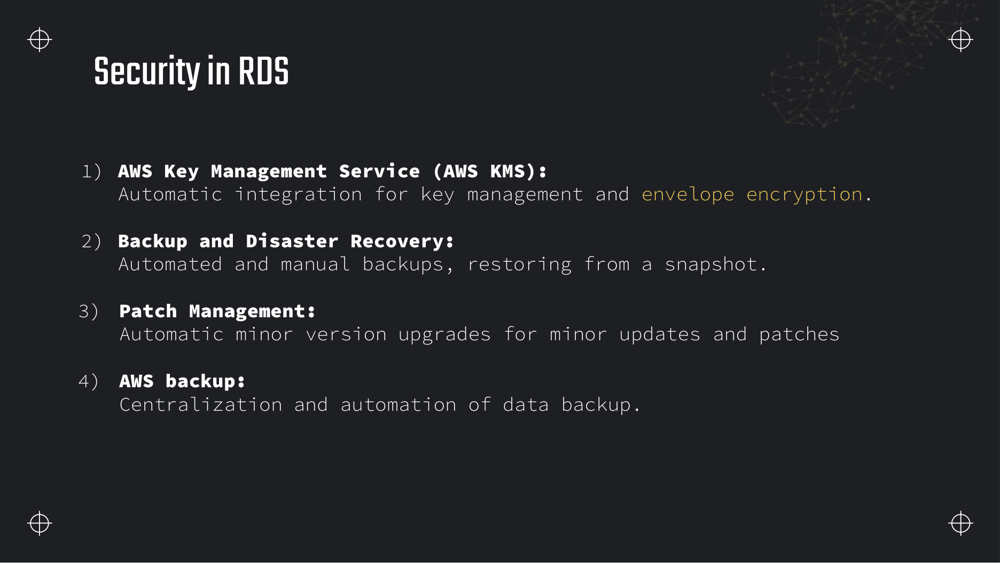
ACID compliance and locking
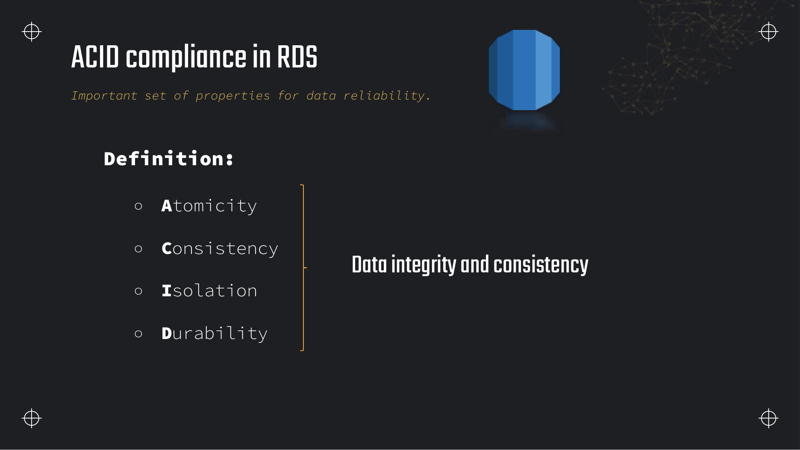
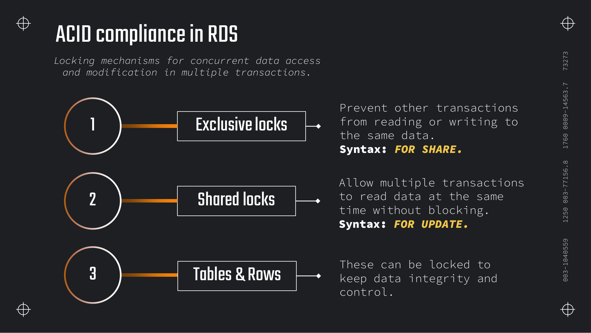
FOR SHARE acquires a shared (read) lock; FOR UPDATE acquires an exclusive (write) lock. The descriptions are correct; only the syntax lines are reversed on the slide.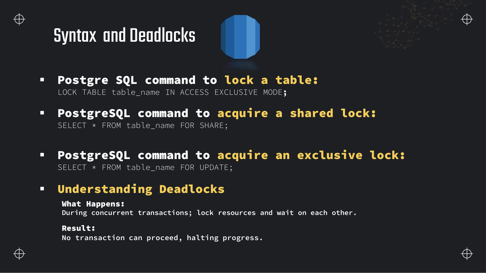
-- ETL job updating pipeline watermark rows: always lock in ascending id order
BEGIN;
SELECT status, last_run_at
FROM etl_watermarks
WHERE pipeline_id IN (101, 205, 310)
ORDER BY pipeline_id -- consistent lock order prevents deadlocks
FOR UPDATE;
UPDATE etl_watermarks
SET last_run_at = NOW(), status = 'running'
WHERE pipeline_id = 205;
COMMIT;
-- Shared read lock (multiple readers OK):
-- SELECT * FROM etl_watermarks WHERE pipeline_id = 205 FOR SHARE;
-- Table-level exclusive lock (blocks all access — use sparingly):
-- LOCK TABLE etl_watermarks IN ACCESS EXCLUSIVE MODE;Multi-AZ versus read replicas
The exam loves this distinction. Multi-AZ is for high availability; read replicas are for read scaling and disaster recovery.
| Feature | Multi-AZ (standby) | Read replica |
|---|---|---|
| Purpose | Automatic failover on primary failure | Scale read traffic; optional DR in another Region |
| Replication | Synchronous to standby in another AZ | Asynchronous — replica can lag seconds |
| Endpoint | Single DNS endpoint fails over to standby | Separate read endpoint per replica |
| Readable? | Standby is not readable (except Aurora — see below) | Yes — route SELECT queries to replica endpoint |
| Cross-Region | Same Region only | Yes — create replica in another Region |
| Promotable | Standby becomes primary on failover (automatic) | Manual promotion to standalone primary |
| Exam trap | "Reduce read load" → wrong answer | "Offload reporting queries" → correct |
RDS Proxy
Amazon RDS Proxy sits between applications and RDS/Aurora and pools database connections. Lambda functions that open a new connection per invocation exhaust the database's max_connections limit quickly; RDS Proxy multiplexes thousands of client connections onto a smaller pool of DB connections. It also improves failover recovery — existing proxy connections survive an Aurora/RDS failover without the application reconnecting to a new host IP.
Operational guidelines and tuning
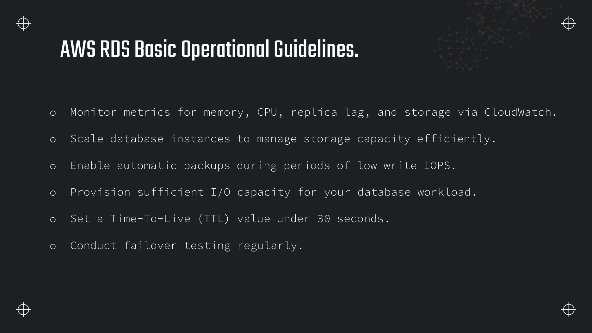
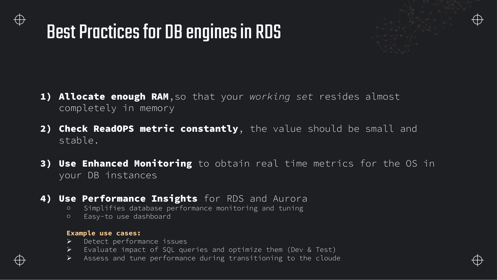
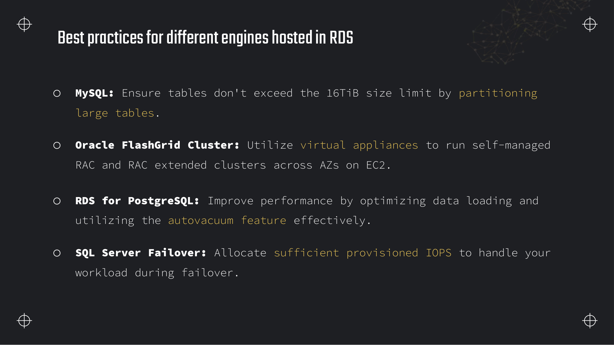
Amazon Aurora
Amazon Aurora is AWS's cloud-native relational engine, compatible with MySQL and PostgreSQL. It separates compute from a distributed storage volume that replicates six copies across three Availability Zones and auto-grows in 10 GB increments up to 128 TiB.
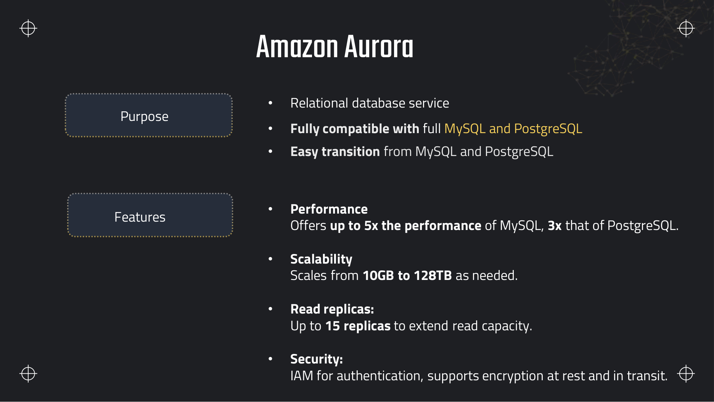
Aurora storage and replicas
- 6 copies, 3 AZs — quorum writes; survives loss of an entire AZ without data loss.
- Up to 15 read replicas — all share the same storage layer; typical replica lag under 100 ms.
- Aurora Global Database — one primary Region, up to five secondary Regions with sub-second cross-Region replication for disaster recovery.
- Aurora zero-ETL integrations — near-real-time replication from Aurora MySQL/PostgreSQL into Redshift without building a custom CDC pipeline.
- Babelfish for Aurora PostgreSQL — translates T-SQL from SQL Server so applications can migrate with minimal code changes.
Aurora Serverless v2
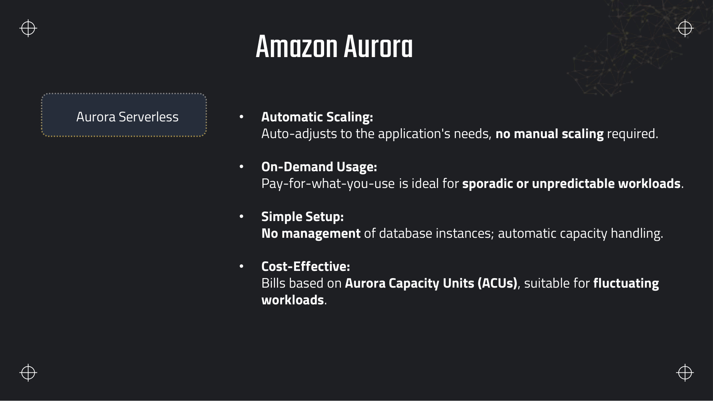
import boto3
client = boto3.client("rds-data", region_name="us-east-1")
response = client.execute_statement(
resourceArn="arn:aws:rds:us-east-1:123456789012:cluster:dea-aurora-sls",
secretArn="arn:aws:secretsmanager:us-east-1:123456789012:secret:dea/db-creds",
database="pipeline_meta",
sql="""
SELECT pipeline_id, status, last_run_at
FROM etl_watermarks
WHERE status = :s
ORDER BY pipeline_id
""",
parameters=[{"name": "s", "value": {"stringValue": "failed"}}],
)
for record in response["records"]:
print(record)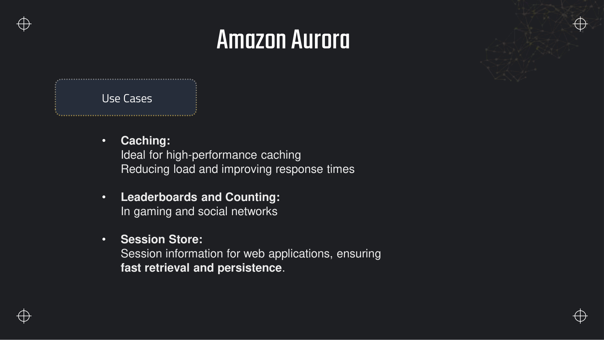
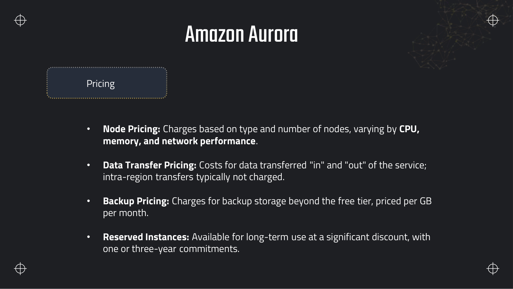
Amazon DocumentDB
Amazon DocumentDB (with MongoDB compatibility) is a fully managed document database for JSON-like workloads. It speaks the MongoDB API — existing drivers and tools work with minimal changes — but runs on a separate, purpose-built storage engine optimised for AWS.
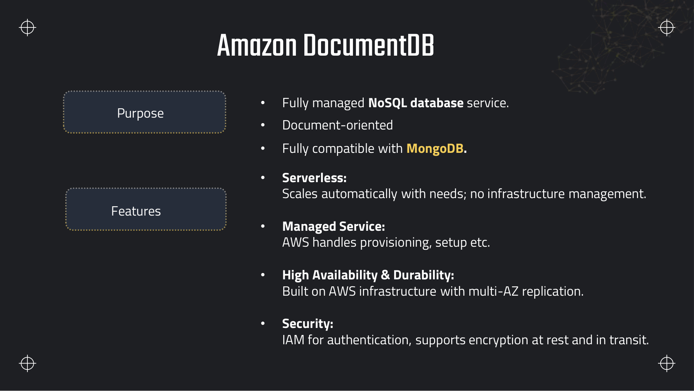
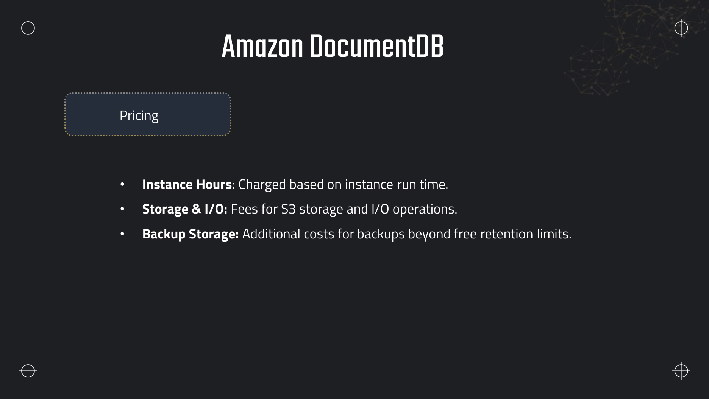

Amazon Neptune
Amazon Neptune is a fully managed graph database for highly connected data — fraud rings, social networks, knowledge graphs, and recommendation engines where relationships matter more than rows.
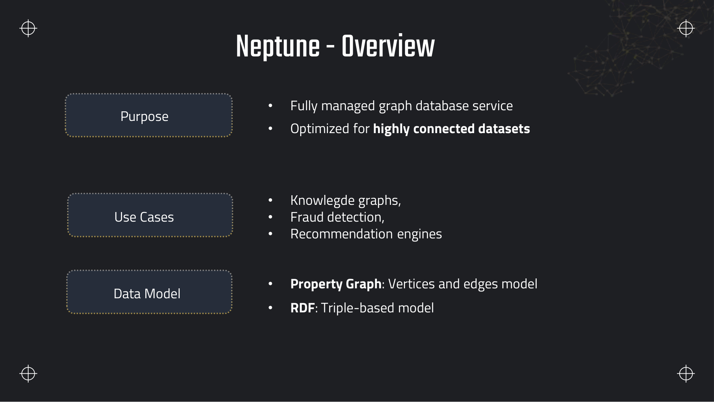
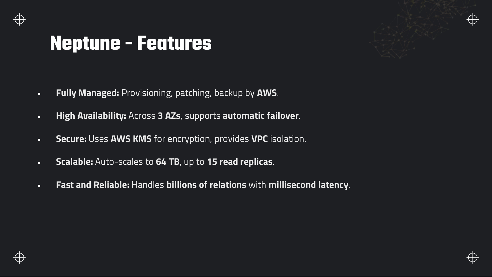
Query languages and Neptune Analytics
| Language | Model | When to use |
|---|---|---|
| Gremlin | Property graph (Apache TinkerPop) | Imperative traversals — "find friends-of-friends within 3 hops" |
| openCypher | Property graph | Declarative pattern matching — familiar to Neo4j users |
| SPARQL | RDF triples | Knowledge graphs, ontologies, semantic web data |
Amazon Neptune Analytics is a separate analytics engine for large-scale graph analytics (PageRank, community detection) over data in S3 or Neptune — use it when the question asks for graph analytics at batch scale, not millisecond OLTP traversals.
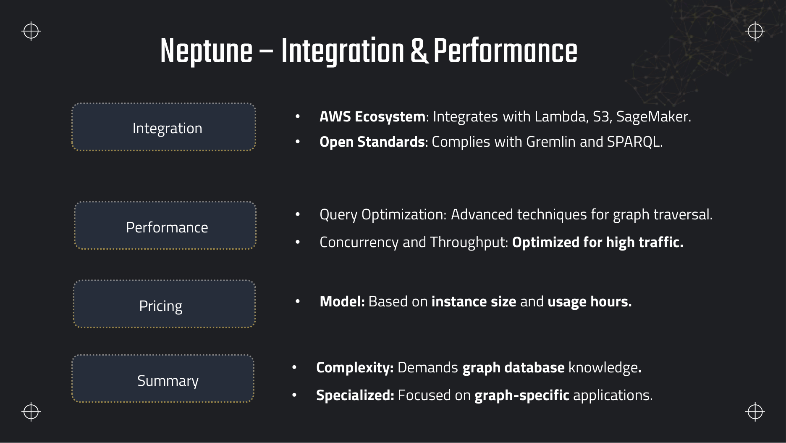
neptune-loader), and SageMaker (ML on graph embeddings). Pricing is per instance hour plus storage — not serverless per query.Amazon Keyspaces (for Apache Cassandra)
Amazon Keyspaces is a serverless, Cassandra-compatible wide-column database. Applications using the Cassandra Query Language (CQL) and existing Cassandra drivers connect with minimal code changes.
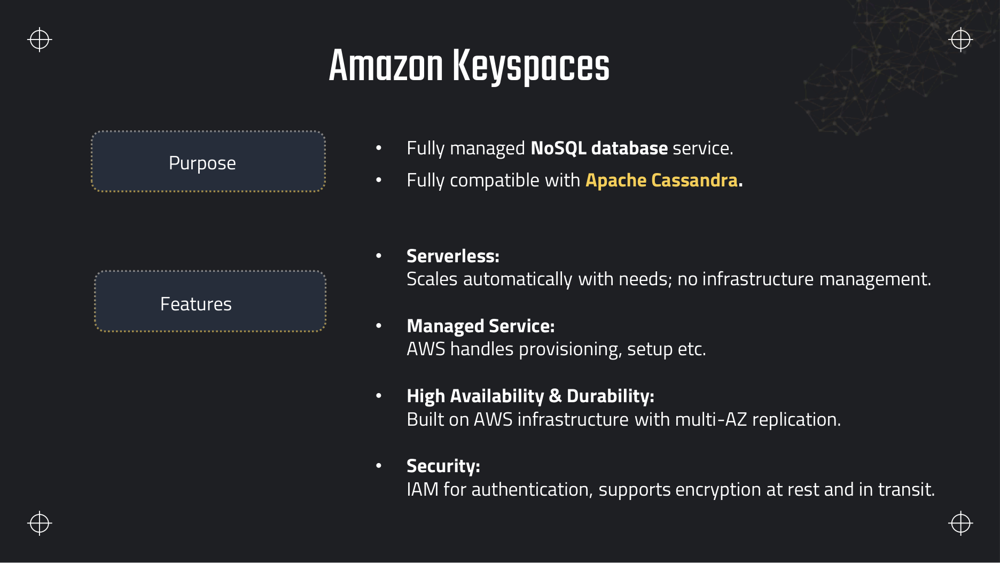
CQL and capacity modes
Tables are defined with CQL (CREATE TABLE, partition key, clustering columns). Two capacity modes mirror DynamoDB's model:
- On-demand — pay per read/write request; good for unpredictable or spiky traffic.
- Provisioned — set RCU/WCU (called read/write capacity units in Keyspaces); cheaper at steady high throughput.
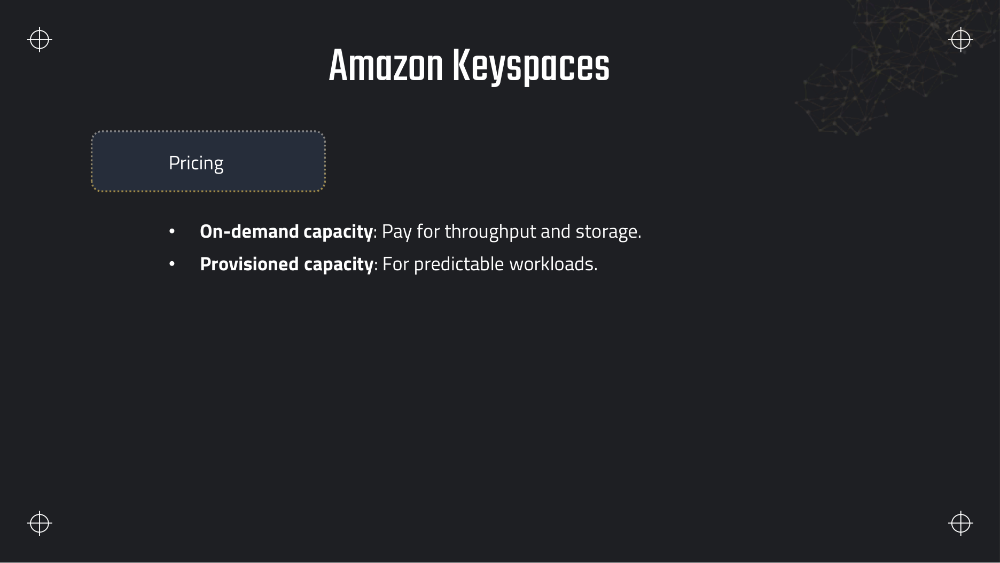
Amazon MemoryDB for Redis
Amazon MemoryDB for Redis is a durable, in-memory database compatible with Redis. Unlike ElastiCache, MemoryDB writes every transaction to a multi-AZ transaction log before acknowledging — so it is a primary database, not just a cache.
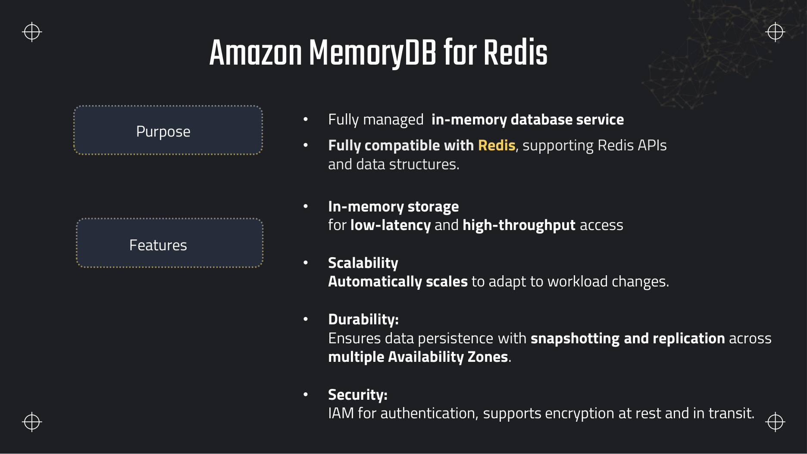
MemoryDB versus ElastiCache for Redis
| Aspect | MemoryDB for Redis | ElastiCache for Redis |
|---|---|---|
| Primary use | Durable primary database | Cache in front of RDS/S3/DynamoDB |
| Durability | Multi-AZ transaction log — data survives node failure | Optional snapshots; cache can be rebuilt from source |
| Latency | Microsecond reads | Microsecond reads |
| Exam phrase | "Microsecond latency and durable" | "Cache" or "reduce database load" |
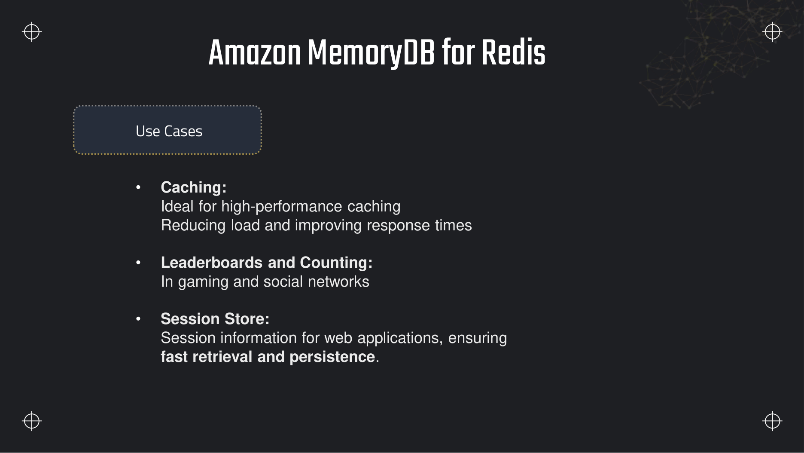
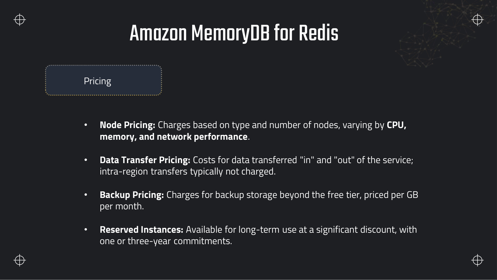
Amazon Timestream
Amazon Timestream is a serverless time-series database optimised for IoT telemetry, application metrics, DevOps monitoring and financial tick data. It automatically tiers data between a memory store (fast recent queries) and a magnetic store (cost-optimised historical data).
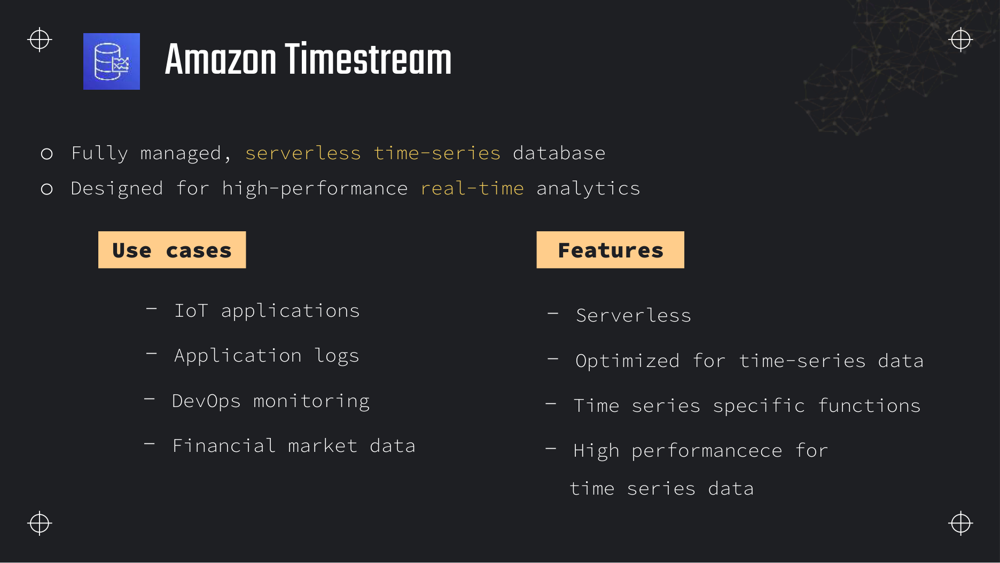
Memory store and magnetic store
- Memory store — holds recent data (default retention: 24 hours to 8760 hours). Optimised for high-ingest and low-latency queries on hot data.
- Magnetic store — automatically moves older records based on retention policy. Cheaper storage for historical analysis.
- Retention policies — configure separately for each tier. Deletes are automatic when records age out.
Amazon Timestream for InfluxDB is a managed InfluxDB-compatible service for teams already on InfluxDB OSS — separate from native Timestream but serves the same time-series exam scenarios when "InfluxDB" appears explicitly.
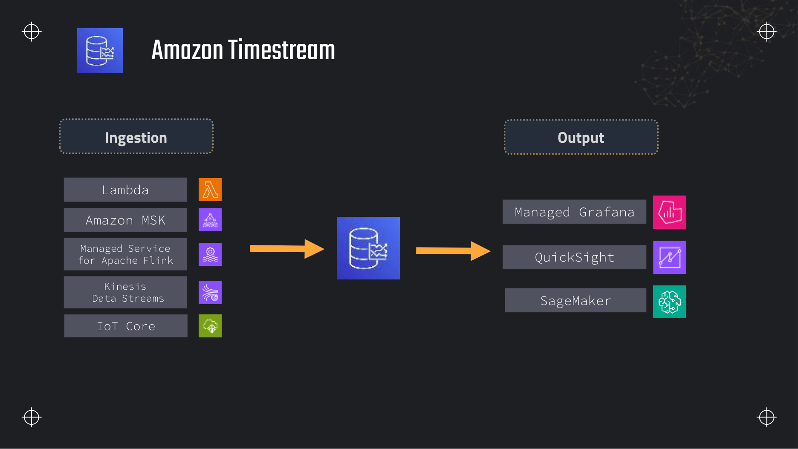
IoT telemetry → Timestream → visualization (animated flow)
import boto3
from datetime import datetime
write = boto3.client("timestream-write", region_name="us-east-1")
query = boto3.client("timestream-query", region_name="us-east-1")
DB = "dea_metrics"
TABLE = "sensor_readings"
NOW = str(int(datetime.utcnow().timestamp() * 1000)) # epoch ms
write.write_records(
DatabaseName=DB,
TableName=TABLE,
Records=[{
"Dimensions": [
{"Name": "device_id", "Value": "plc-042"},
{"Name": "region", "Value": "us-east-1"},
],
"MeasureName": "temperature",
"MeasureValue": "38.7",
"MeasureValueType": "DOUBLE",
"Time": NOW,
"TimeUnit": "MILLISECONDS",
}],
)
result = query.query(
QueryString=f"""
SELECT device_id,
AVG(measure_value::double) AS avg_temp
FROM {DB}.{TABLE}
WHERE time > ago(1h)
AND measure_name = 'temperature'
GROUP BY device_id
ORDER BY avg_temp DESC
"""
)
for row in result["Rows"]:
print(row["Data"])Purpose-built database selection
Domain 2 service-selection questions describe a data model and access pattern. Match the phrase to the service before comparing cost or operational overhead.
| Service | Data model | Access pattern | Exam phrase that points here |
|---|---|---|---|
| RDS / Aurora | Relational tables, SQL, joins | ACID OLTP, complex queries, known schema | "SQL", "ACID transactions", "PostgreSQL/MySQL", "join across tables" |
| DynamoDB | Key-value / document, partition + sort key | Single-digit ms key lookups at any scale | "partition key", "millisecond latency at scale", "serverless NoSQL" |
| DocumentDB | JSON/BSON documents | Flexible schema, document queries, secondary indexes | "document/JSON with MongoDB API", "MongoDB compatible" |
| Neptune | Property graph or RDF triples | Multi-hop relationship traversals | "graph relationships", "knowledge graph", "Gremlin", "fraud ring detection" |
| Keyspaces | Wide-column (Cassandra) | High write throughput, tunable consistency, CQL | "Cassandra workload", "CQL", "wide-column" |
| MemoryDB | Redis data structures in memory | Microsecond latency with durability | "microsecond latency and durable", "Redis as primary database" |
| ElastiCache | Redis/Memcached in memory | Cache in front of a database; session store (non-durable OK) | "cache", "reduce database read load", "sub-millisecond cache" |
| Timestream | Time-series (timestamp + measures) | Append-only metrics, IoT telemetry, downsampling | "time series", "IoT sensor data", "metrics over time" |
| Redshift | Columnar relational (MPP) | Analytics SQL over billions of rows, aggregations | "data warehouse", "analytics", "star schema", "BI reporting" |
| OpenSearch | JSON documents with inverted index | Full-text search, log analytics, faceted search | "full-text search", "log analytics", "Elasticsearch" |
Deeper detail and exam edge cases
Quotas, billing meters, and availability-model traps across RDS, Aurora, and the purpose-built engines — the details the selection table above does not spell out.
Limits and quotas that decide answers
| Limit | Value | Adjustable? | Why it matters |
|---|---|---|---|
| RDS read replicas | 5 per instance (default) | Soft | Read scaling stops at five unless you move to Aurora (15 replicas) or shard |
| Aurora read replicas | 15 per cluster | Hard | All share storage — adding replica is fast but endpoint management grows |
| RDS storage autoscaling cooldown | 6 hours between modifications | Hard | Cannot shrink quickly after a spike — size max limit generously upfront |
| Aurora storage growth | 10 GB increments to 128 TiB | Hard (auto) | No pre-provisioning — pay per GB-month as volume grows |
| Aurora Serverless v2 minimum | 0.5 ACU | Hard | Idle cluster still bills at floor ACU — not zero cost when quiet |
| Backup retention (RDS/Aurora) | 0–35 days automated | Hard (max 35) | Manual snapshots persist until deleted — independent of retention window |
| IAM database auth token | 15-minute validity | Hard | Long-running ETL connections must refresh token or use Secrets Manager rotation |
| Aurora backtrack | MySQL-compatible Aurora only | Hard | PostgreSQL Aurora has no backtrack — use PITR restore instead |
| Keyspaces row size | 1 MB maximum | Hard | Wide rows above DynamoDB-like limits fail — offload blobs to S3 |
| DocumentDB cluster storage | Auto-grows in 10 GB increments (up to 128 TiB) | Hard (auto) | Instance count scales compute; storage bills separately from instance hours |
| Neptune bulk load | neptune-loader from S3 | Hard (pattern) | Large graph ingests use IAM-authenticated loader, not INSERT loops |
| Timestream magnetic store | Configurable retention (days to years) | Hard (setting) | Late-arriving records land in magnetic tier and cost more to query than memory tier |
What you actually pay for
| Billed dimension | Unit | How to spend less |
|---|---|---|
| RDS/Aurora compute | Instance-hour or ACU-second | Right-size; Aurora Serverless v2 for variable load; Reserved Instances for steady OLTP |
| RDS storage | GB-month (gp3/io2) | Enable autoscaling max cap; archive cold data to S3; delete unused snapshots |
| Aurora Standard I/O | Per million I/O requests | Switch to I/O-Optimized when I/O exceeds ~25% of total Aurora spend |
| Aurora Global Database | Cross-Region replication data transfer + secondary Region instances | Use only when RTO/RPO requires sub-second cross-Region reads |
| Backup storage beyond free tier | GB-month (free = DB size for automated backups) | Shorten retention; delete obsolete manual snapshots |
| RDS Proxy | Proxy capacity units (vCPU-based) | Only where connection pooling needed (Lambda, serverless apps) — not for long-batch ETL |
| DocumentDB / Neptune | Instance-hour + storage + I/O | Scale replicas for reads; pause dev clusters where supported |
| Keyspaces on-demand | Per read/write request unit | Provisioned mode at steady high throughput — mirrors DynamoDB economics |
| Timestream | Memory store GB-hour + magnetic store GB-month + queries scanned | Shorten memory retention; reject or route very late data separately |
| Oracle/SQL Server licensing | Licence-included (LI) vs BYOL | BYOL when enterprise agreement covers licences; LI for short migrations |
Traps that catch people
- Multi-AZ for read scaling — Standard RDS Multi-AZ standby is not readable. Read replicas handle SELECT offload. Multi-AZ DB cluster (two readable standbys) is a different product — exam wording matters.
- Multi-AZ DB cluster vs instance — Multi-AZ DB cluster gives two readable standbys in addition to the writer; classic Multi-AZ instance has one non-readable standby. Only the cluster option serves read traffic from standbys.
- Storage autoscaling lag — RDS waits up to 6 hours between storage increases. A sudden bulk load can fill disk before autoscaling triggers — set max storage above expected peak.
- Aurora clone scope — Aurora cloning is copy-on-write — fast and cheap for dev/test snapshots of production. Clones still consume storage for changed pages; not a free duplicate.
- Backtrack on PostgreSQL — Aurora backtrack rewinds MySQL-compatible clusters without restore. PostgreSQL Aurora questions pointing to "rewind 1 hour" need PITR restore to new cluster, not backtrack.
- IAM DB auth in batch jobs — 15-minute token expiry breaks jobs running longer unless the driver refreshes. Use Secrets Manager with RDS Proxy for long ETL, or static credentials in Secrets Manager with rotation.
- DocumentDB MongoDB version — DocumentDB supports a subset of MongoDB API versions (4.0/5.0 compatibility). Aggregation pipelines or drivers targeting newer MongoDB features may fail after lift-and-shift.
- MemoryDB vs ElastiCache — ElastiCache data can be rebuilt from RDS; MemoryDB is the durable primary. "Cache" in the question → ElastiCache; "durable microsecond" → MemoryDB.
- Keyspaces 1 MB row — Cassandra-wide rows with large collections hit Keyspaces harder limit than DynamoDB's 400 KB item — design partition width accordingly.
- Timestream tier confusion — Recent data in memory store queries faster and cheaper per query. Historical analytics on magnetic store scans more GB — tune retention so dashboards query the memory tier.
Troubleshooting playbook
| Symptom | Most likely cause | What to check / fix |
|---|---|---|
RDS StorageFull alarm | Autoscaling max reached or 6-hour cooldown | CloudWatch FreeStorageSpace; manually increase max allocated storage; archive old data |
| Read replica lag growing | Heavy write load on primary; large DDL on primary | CloudWatch ReplicaLag; move heavy reporting to fresher replica; scale primary |
| Lambda cannot connect to RDS | Connection exhaustion (max_connections) | Add RDS Proxy; reduce Lambda concurrency or use Data API for Aurora Serverless |
| Aurora failover slower than expected | DNS TTL; connection pool holding stale host | Use cluster endpoint (writer/reader); RDS Proxy; lower client DNS cache |
| Neptune bulk load fails | Wrong IAM role on loader; S3 prefix permissions | neptune-loader logs in CloudWatch; IAM role trust for Neptune cluster |
| DocumentDB migration driver errors | Unsupported MongoDB API feature | Check DocumentDB compatibility matrix; test aggregation pipeline in staging |
| Timestream reject high-volume writes | Magnetic store retention exceeded for record timestamp | Adjust memory/magnetic retention; validate device clock skew |
| RDS Custom patch failure | Custom automation outside standard RDS maintenance | SSM documents on Custom instance; verify IAM for automation framework |
Production patterns
OLTP source → warehouse
RDS/Aurora PostgreSQL as pipeline metadata and operational store. Aurora zero-ETL to Redshift for analytics replica without DMS. Read replicas serve reporting SELECTs that tolerate lag; Multi-AZ (or Multi-AZ DB cluster) covers writer failover. RDS Proxy in front of Lambda watermark updaters.
Purpose-built at the edge
Timestream for device telemetry (Kinesis → Flink → Timestream). MemoryDB for real-time feature store with durability. Neptune for fraud graph traversals loaded via S3 bulk loader. Anti-pattern: forcing relational RDS for time-series IoT — partition management and retention become operational burden.
curl -X POST \
-H 'Content-Type: application/json' \
https://<cluster-endpoint>:8182/loader \
-d '{
"source": "s3://dea-lab-ab-4821/raw/graph/nodes/",
"format": "csv",
"iamRoleArn": "arn:aws:iam::123456789012:role/NeptuneLoadFromS3",
"region": "us-east-1",
"failOnError": "FALSE"
}'Where this fits with the rest of the exam
This section completes Domain 2 alongside DynamoDB (key-value at scale) and Redshift (analytical SQL). Operational databases feed ingestion in Section 2 (DMS, JDBC sources) and zero-ETL paths in Section 10.
- Redshift zero-ETL from Aurora — least-effort path when the question pairs OLTP Aurora with a warehouse.
- Section 9 (DynamoDB) — when the scenario is partition-key access, not SQL or documents.
- Section 18 (Migration) — DMS homogeneous/heterogeneous moves into RDS or Aurora.
- Section 6 (Streaming) — Timestream and MemoryDB ingest paths from Kinesis and IoT Core.
Interview questions
Answer each one out loud before opening it.
When would you choose RDS Multi-AZ over a read replica, and can you use both together?Comparison
Multi-AZ is for high availability — synchronous standby in another AZ, automatic failover, same endpoint. It does not offload read traffic (the standby is not readable in standard RDS).
Read replicas are for read scaling and optional cross-Region DR — asynchronous, separate endpoint, can lag. Use both together in production: Multi-AZ for failover, read replicas for reporting queries.
Why would Lambda functions use RDS Proxy instead of connecting directly to Aurora?Architecture
Each Lambda invocation can open a new TCP connection to the database. At concurrency, you hit max_connections and the database rejects new connections. RDS Proxy pools thousands of application connections onto a smaller set of DB connections and handles credential rotation via Secrets Manager.
After an Aurora failover, the proxy endpoint stays the same — Lambda does not need to resolve a new IP. Combined with the RDS Data API (HTTP, no persistent connection), this is the standard serverless + relational pattern.
What makes Aurora storage different from RDS storage?Fundamentals
RDS stores data on EBS volumes attached to each instance — storage scales with instance size or allocated storage. Aurora uses a shared, distributed storage volume: six copies across three AZs, auto-growing in 10 GB steps to 128 TiB, with quorum writes.
Read replicas attach to the same volume (no full data copy), which is why Aurora supports up to 15 low-lag replicas and fast replica provisioning compared to RDS.
DocumentDB, DynamoDB, or RDS PostgreSQL for a MongoDB migration?Design
If the application uses MongoDB drivers, BSON documents, and MongoDB query operators → DocumentDB. Minimal application change.
If you are redesigning for key-based access at massive scale with no joins → DynamoDB. If you want relational integrity and SQL → RDS PostgreSQL with JSONB columns, but that is not a MongoDB API migration.
How do you choose between Neptune, Redshift and OpenSearch for analyzing connected data?Design
Neptune when traversals are the query — "find all accounts within three hops of a flagged node" in milliseconds on a live graph.
Redshift when relationships are modelled as fact/dimension tables and the workload is batch analytics SQL over billions of rows.
OpenSearch when the need is full-text or log search, not relationship traversal. Fraud "rings" with graph patterns → Neptune; keyword search over support tickets → OpenSearch.
MemoryDB versus ElastiCache — both are Redis-compatible. When is each the right primary choice?Comparison
ElastiCache when Redis is a cache — data can be rebuilt from RDS/S3/DynamoDB on eviction. Optimised for lowest latency reads with optional snapshots.
MemoryDB when Redis is the system of record — leaderboards, session state, or inventory counters that must survive node failure without rebuilding from another store. Multi-AZ transaction log provides durability with microsecond reads.
Explain Timestream's two-tier storage and why it matters for cost.Performance
The memory store holds recent data for fast ingests and interactive queries — you pay for higher-performance storage but query latency is low. The magnetic store holds older data moved automatically by retention policy — cheaper per GB, still queryable but optimised for scans over history.
Configure retention per tier so hot IoT data (last 24 hours) stays in memory for dashboards while years of compliance history sit in magnetic storage at lower cost.
An exam question mentions "Cassandra", "CQL", and "multi-Region writes". What service do you pick?Exam
Amazon Keyspaces — fully managed, Cassandra-compatible, CQL API, multi-AZ durability by default. On-demand capacity for spiky traffic; provisioned for steady write-heavy workloads.
Do not pick DynamoDB unless the question shifts to partition-key design without Cassandra compatibility, or DocumentDB unless it mentions MongoDB instead.
What is Aurora zero-ETL and when would a data engineer care?Architecture
Aurora zero-ETL replication streams changes from Aurora PostgreSQL or MySQL into Redshift without building a custom CDC pipeline (no DMS task, no Glue job). Redshift gets near-real-time copies of operational tables for analytics.
Choose it when the question wants operational + analytical stores with minimal pipeline code — see also Redshift integration patterns.
Hands-on practice
Free tier where possible. Delete everything at the end of each task.
-
Launch a
RDS → Create database → PostgreSQL → Free tier templatedb.t3.microRDS PostgreSQL instance (free tier), enable automated backups, connect and run the deadlock-safe watermark query from this section.You can connect with psql or the Query Editor and see the
etl_watermarkstable after creating it.Show stepsConsole + SQL
- RDS → Create database → Standard → PostgreSQL 15 → Template: Free tier → DB identifier
dea-pg-lab. - Set master username/password. Single-AZ is fine for the lab. Create.
- Security group: allow inbound 5432 from your IP.
- Connect and create a sample table, then run the FOR UPDATE query from the RDS section.
psql -h dea-pg-lab.xxxxx.us-east-1.rds.amazonaws.com -U postgres -d postgres CREATE TABLE etl_watermarks ( pipeline_id INT PRIMARY KEY, status TEXT, last_run_at TIMESTAMPTZ ); INSERT INTO etl_watermarks VALUES (101,'ok',NOW()), (205,'failed',NOW());Cleanup: RDS → dea-pg-lab → Delete → uncheck final snapshot.
- RDS → Create database → Standard → PostgreSQL 15 → Template: Free tier → DB identifier
-
Create a Timestream database and table, write ten sample sensor records with the CLI, and run a
Amazon Timestream → Create databaseSELECT … WHERE time > ago(1h)query.Query returns your device dimensions and average measure values.
Show stepsCLI
aws timestream-write create-database --database-name dea_metrics --region us-east-1 aws timestream-write create-table \ --database-name dea_metrics \ --table-name sensor_readings \ --retention-properties "MemoryStoreRetentionPeriodInHours=24,MagneticStoreRetentionPeriodInDays=7" \ --region us-east-1 # Use the Python write example from this page, or timestream-write write-records via CLI aws timestream-query query \ --query-string "SELECT COUNT(*) FROM dea_metrics.sensor_readings WHERE time > ago(1h)" \ --region us-east-1Cleanup: delete table then database. Timestream bills per GB ingested and scanned — keep the lab small.
-
Using the purpose-built database table in this section, classify five scenarios: gaming leaderboard (durable), social graph recommendations, MongoDB lift-and-shift, IoT temperature metrics, and monthly sales reporting.
Answers: MemoryDB, Neptune, DocumentDB, Timestream, Redshift — written down with the phrase that justified each.
Show answersExam
- Leaderboard with durable counters → MemoryDB (microsecond + durable Redis).
- People-you-may-know via relationship hops → Neptune (graph relationships).
- Existing MongoDB app → DocumentDB (MongoDB API).
- Sensor readings over time → Timestream (time series / IoT).
- Monthly aggregates over star schema → Redshift (data warehouse / analytics).
Recap
- RDS: managed SQL engines, KMS encryption, ACID, Multi-AZ (HA sync standby) vs read replicas (async read scale / cross-Region DR).
- RDS Proxy pools connections for Lambda; Data API runs SQL over HTTPS for Aurora Serverless.
- Aurora: 6-copy storage, 128 TiB auto-grow, 15 read replicas, Global Database, Serverless v2 ACUs, zero-ETL to Redshift.
- DocumentDB = MongoDB API; Keyspaces = Cassandra/CQL; Neptune = Gremlin, openCypher, SPARQL graph traversals.
- MemoryDB = durable Redis primary; ElastiCache = cache layer — "microsecond latency and durable" → MemoryDB.
- Timestream: memory store (hot) + magnetic store (historical); IoT → Kinesis → Flink → Timestream → Grafana.
- Match exam phrases first (graph, time series, Cassandra, MongoDB API), then apply least-overhead and cost qualifiers.
- Working-set-in-RAM rule: flat ReadIOPS means buffer cache is healthy; climbing ReadIOPS means scale memory or add replicas.